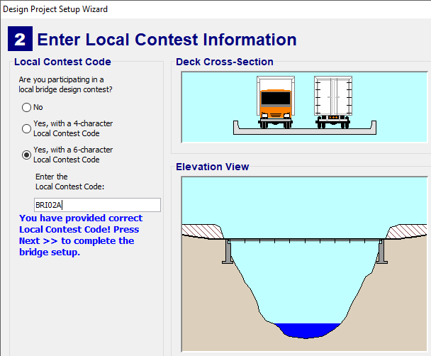
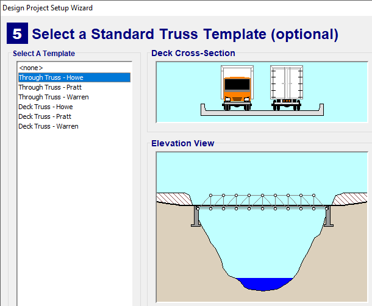
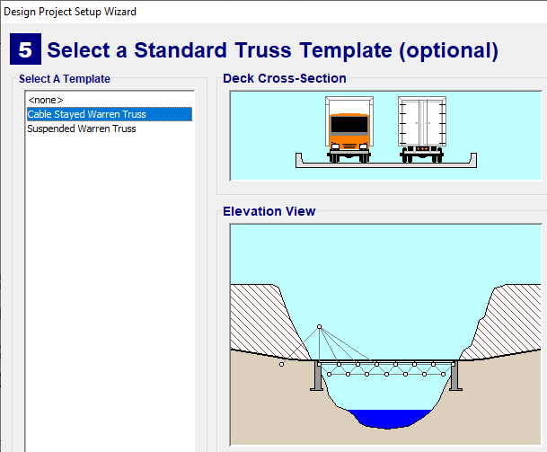
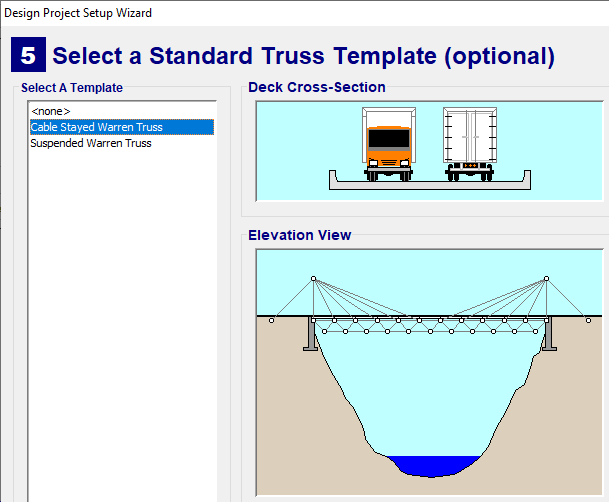
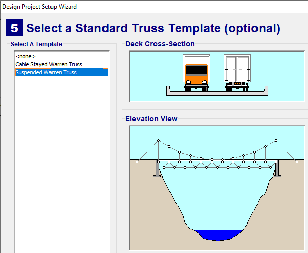
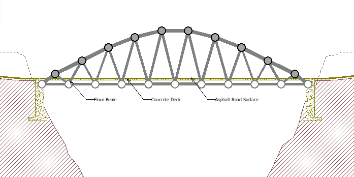
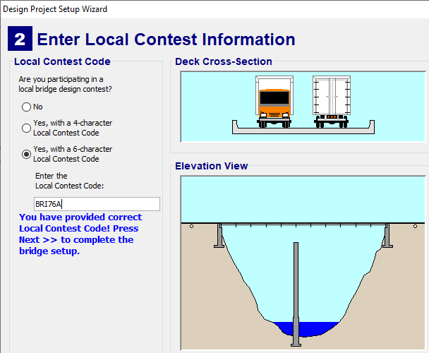

Diseñador de puentes¶

El diseñador de puentes "Bridge Designer" proporciona una introducción realista a la ingeniería a través de una experiencia de diseño auténtica y práctica.
Este software proporciona las herramientas para diseñar, probar y optimizar un puente de acero para autopista, basado en especificaciones, restricciones y criterios de rendimiento realistas.
The Bridge Designer es un software para Windows y Mac OS X, gratuíto y de dominio público. Se proporciona y está destinado únicamente para uso educativo.
Enlaces¶
Ejercicios¶
Diseñar un puente con el código BRI02A y plantilla Through Truss - Warren para que tenga el menor coste posible.

Diseñar un puente con el código BRI02A y plantilla Through Truss - Howe para que tenga el menor coste posible.
Diseñar un puente con el código BRI23A y plantilla Continuous Arch - Warren para que tenga el menor coste posible.

Diseñar un puente con el código BRI23A y plantilla Continuous Arch - Pratt para que tenga el menor coste posible.

Diseñar un puente con el código BRI12C y plantilla Cable Stayed Warren Truss para que tenga el menor coste posible.
Diseñar un puente con el código BRI15A y plantilla Cable Stayed Warren Truss para que tenga el menor coste posible.
Diseñar un puente con el código BRI15A y plantilla Suspended Warren Truss para que tenga el menor coste posible.
Diseñar un puente con el código BRI54A y plantilla Continuous Deck Truss para que tenga el menor coste posible.

Diseñar un puente con el código BRI02A y sin plantilla (elegir plantilla <none>). A continuación se diseñará el puente con la forma de la siguiente imagen.
El puente debe tener el menor coste posible.
Diseñar un puente con el código BRI76A y forma libre. Se pueden utilizar cables de suspensión y el apoyo central.
El puente debe tener el menor coste posible.